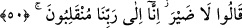

mânâsı, ‘Andolsun benimle ihtilafa düştüğünüz için ellerinizi ve ayaklarınızı
kestireceğim’ demektir. Çünkü mezkûr kestirme cezayı hafifletmek ve suç işleyeni
şiddetle cezalandırma menfaatinin elden gitmesinden sakınmak demek olduğu için
Fir’avn’un durumuna ve amacına uygun düşmez. Ancak bu onun ahmaklığına yorulursa o
başka. Çünkü bu durumda o, ağır ceza ile tehdid edilecek yerde onları hafifletme
sayılacak şeyle tehdid etmiş olur.”
Bu görüş sırf vehimden ibârettir. Çünkü ardından gelen “hepinizi astıracağım!” sözü
bunu reddeder. Her halükârda hepinizi asacağım; böylelikle ölürsünüz de bütün muhalif
olanlar ibret alırlar. el-Keşf ’te der ki: “Sizi hem kestirme ve hem de astırma cezasına
sizi çarptıracağım.”
Rivâyete göre Fir’avn onları hurma dallarına astırdı ve ölene kadar böyle kaldılar.
A’râf sûresinde (7/124) “sonra da hepinizi astıracağım.” şeklinde geçmektedir.
Onlara daha şiddetli azâb etmek için bu astırmayı bir müddet bekletmiştir.
50. “Zararı yok, (nasıl olsa) biz şüphesiz Rabbimize döneceğiz.” dediler.
Îman eden sihirbazlar: Bunun “Zararı yok,” Senin tehdidlerinin bize hiçbir zararı
olmaz; biz ölümden korkmuyoruz. “(Nasıl olsa) biz şüphesiz Rabbimize döneceğiz.” O
bizi seni yaptıklarına sabır ile mükâfâtlandırır, tevhîde sebatın karşılığını verir.
“dediler.”
Âyette insanın ölümden korksa bile hakkı ızhâr etmesi gerektiğine delâlet vardır. İbn
Atâ der ki: Hakîkat ile O’nu müşâhedeye eren kimse, karşısına çıkan sevilen ve
sevilmeyen her şeye katlanır. Görmez misin sihirbazların müşâhedesi sahih olduğu için
nasıl “Zararı yok” dediler.
Sa’dî ehlullah hakkında şöyle der:
Anbean elem şarabını içerler, acı görürlerse de susarlar
Canan için çekilen sabır dost elinden alınan acı şeker gibidir
Hâfız da der ki:
Sevgili, âşıkların ateş içinde kalmalarını istiyorsa
Kevser çeşmesine bile bakarsam gözüm kör olsun
Lütufla çağırır dâvet edersen, büyük iyilik olur
Kızıp da kovacak olursan, bil ki gücenmeyiz, içimiz saftır